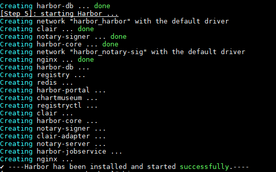
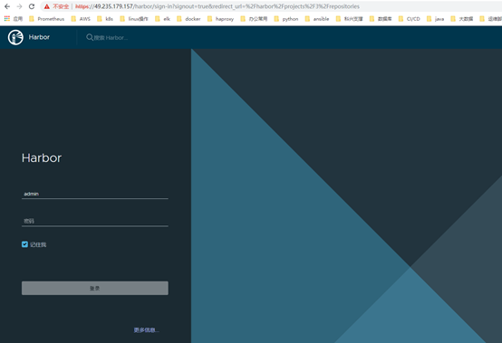
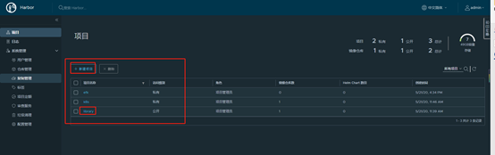
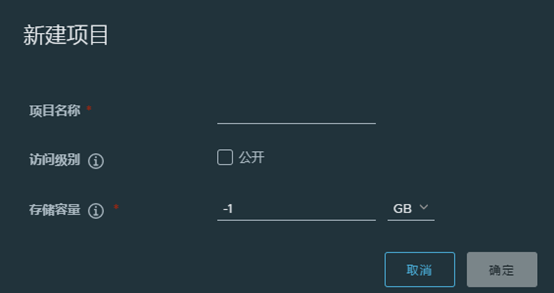
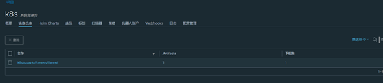

本篇文章介绍了如何搭建企业级私有镜像仓库harbor及harbor仓库的使用。
搭建harbor仓库
安装docker和docker-compose
1 |
下载harbor安装包
1 |
配置https方式访问证书
- 生成根证书(存放到目录/etc/docker/certs.d/reg.niewx.club)
1
$ mkdir -p /etc/docker/certs.d/reg.niewx.club && cd /etc/docker/certs.d/reg.niewx.club
- 创建自己的CA证书（不使用第三方权威机构的CA来认证，自己充当CA的角色
1
$ openssl genrsa -out ca.key 2048
- 生成自签名证书（使用已有私钥ca.key自行签发根证书）
1
$ openssl req -x509 -new -nodes -key ca.key -days 10000 -out ca.crt -subj "/CN=Harbor-ca"
- 生成服务器端私钥和CSR签名请求
1
$ openssl req -newkey rsa:4096 -nodes -sha256 -keyout server.key -out server.csr
- 签发服务器证书
1
2echo subjectAltName = IP:49.235.179.157 > extfile.cnf
openssl x509 -req -in server.csr -CA ca.crt -CAkey ca.key -CAcreateserial -days 365 -extfile extfile.cnf -out server.crt - 最终生成的证书如下
1
2[root@VM_0_13_centos reg.niewx.club]# ls
ca.crt ca.key ca.srl extfile.cnf server.crt server.csr server.key
修改harbor配置项
1 | [root@VM_0_13_centos harbor]# cat harbor.yml |
主要需要修改上面标记的选项。
启动harbor
1 |

启动日志显示上面则启动成功
如果修改了配置项需要重新启动harbor则重新执行以下命令即可1
2
3
haobor仓库的使用
harbor的登录和创建项目
默认账号为admin，密码为你之前修改配置密码

项目管理，里面会有一个默认的公开项目library，所有人可以上传下载镜像

点击新建项目，输入项目名称，设置存储容量和是否公开

查看项目的镜像仓库，也可以查看推送命令推送镜像

客户端推送镜像
首先需要配置docker认真地址
1 | [root@node1 ~]# cat /etc/docker/daemon.json |
harbor中角色权限说明
| 角色 | 权限说明 |
|---|---|
| 访客 | 对于指定项目拥有只读权限 |
| 开发人员 | 对于指定项目拥有读写权限 |
| 维护人员 | 对于指定项目拥有读写权限，创建 Webhooks |
| 项目管理员 | 除了读写权限，同时拥有用户管理/镜像扫描等管理权限 |

...
...
00:00
00:00
This is copyright.